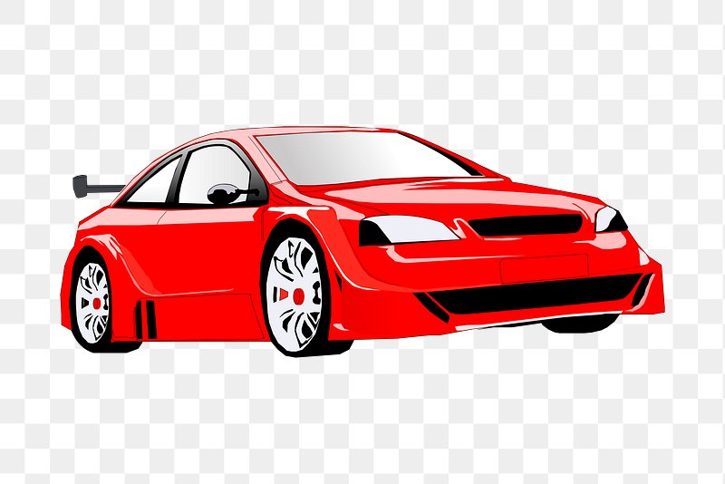

All about cars!
Published on Nov 8, 2024 by Yousif OmranThis is a Honda Civic. While many people view it as an economical car, car enthusiasts see it as one of the most customizable cars out there. It even appeared in the Fast and Furious movies! The aftermarket scene for Civics is huge, offering a wide range of parts that can fit any budget, from affordable to high-end. Although stock Civics aren't the fastest cars right off the assembly line, people modify them to achieve impressive quarter-mile times.
I picked this image because I believe it's a significant part of the car scene, and a lot of people really love this car. I found this PNG on Google Images.
 ©2024 Yousif Omran. All rights reserved